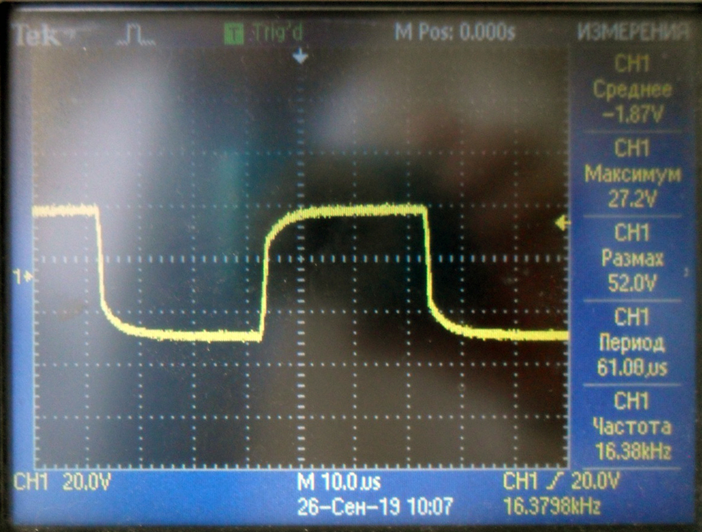

Проверка умножителя 1315
- Проверяем мультиметром на короткое замыкание провода, припаянные к умножителю
- Проверяем мультиметром правильность установки и исправность светодиода. Мультиметр в режиме измерения диода (прозвонки). Светодиод должен светиться синим цветом, номинал KP-1608QBC-D
- Собрать схему для проверки. Взять пульт для умножителей, подключить к источнику питания Б5-78/6 (подаем напряжение 6-7 В). К выводам пульта подключаем осциллограф и умножитель.
- На осциллографе должна быть такая картина
- Проверить мультиметром (1000в) напряжение на конденсаторах относительно земли Напряжения должны быть :
- При измерении мультиметром напряжения на 11 точке , картинка на осциллографе изменится и будет такая: 
- Потребление от источника питания рабочего умножителя не более 20ма, если потребление больше (например 60ма) и картинка на осциллографе с сильно заваленными фронтами, значит умножитель не исправен.
- Ремонт заключается в проверке элементов и монтажа.
- Обратить внимание на качество пайки, чтобы не было не припаянных элементов.
- Проверить диоды мультиметром.
- Проверить маленькие конденсаторы мультиметром (предел 20Мом), должно быть не менее 2 Мом ! что меньше- менять. Номинал 0603-X7R-0,1 мкФ +_10%-100В (06031C104KAT2A)
| Точка | 1 | 2 | 3 | 4 | 5 | 6 | 7 | 8 | 9 | 10 | 11 |
| Напряжение | 76 | 20 | 140 | 180 | 218 | 247 | 280 | 315 | 345 | 375 | 397 |